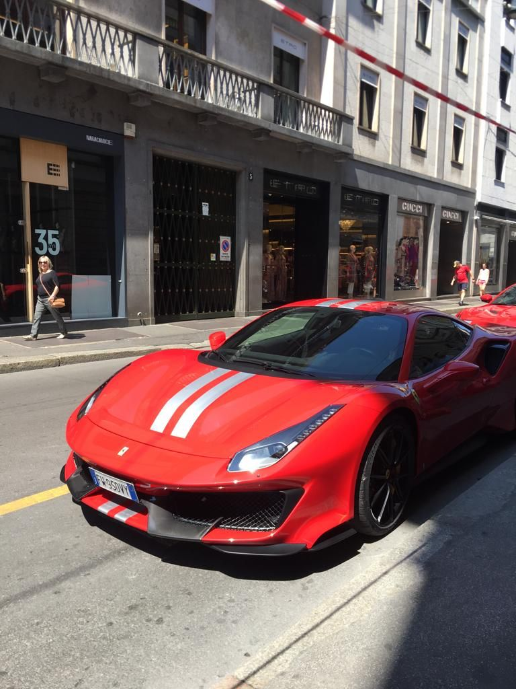

resultando numa relação peso-potência excepcional e uma dirigibilidade mais ágil. 4 | Performance: Com um tempo de aceleração de 0 a 100 km/h em cerca de 2.85 segundos e uma velocidade máxima de mais de 340 km/h, o 488 Pista é um dos carros de produção
mais rápidos e capazes da Ferrari, oferecendo uma experiência de condução emocionante tanto na pista como na estrada. 5 | Interior: O interior é projetado com foco no piloto, com materiais de alta qualidade, detalhes desportivos
e uma série de controlos ergonomicamente posicionados, proporcionando uma sensação de envolvimento total ao conduzir. 6 | Tecnologia: O Ferrari 488 Pista incorpora tecnologia de ponta, incluindo sistemas de controle de tração e estabilidade, suspensão adaptativa e uma variedade de modos de condução selecionáveis,
permitindo aos condutores personalizar a sua experiência de condução de acordo com as suas preferências e condições da estrada.
Ferrari 488 Pista
O Ferrari 488 Pista é uma máquina de desempenho de classe mundial, projetada para proporcionar emoções intensas e uma experiência de condução excepcional tanto em pistas como em estradas. Aqui está um resumo das principais características:
1 | Desempenho: O Ferrari 488 Pista é um carro desportivo de alto desempenho projetado para pistas, baseado no Ferrari 488 GTB.
Dispõe de um motor V8 twin-turbo de 3.9 litros que produz uma potência impressionante de 720 cavalos e um torque considerável.
resultando numa relação peso-potência excepcional e uma dirigibilidade mais ágil. 4 | Performance: Com um tempo de aceleração de 0 a 100 km/h em cerca de 2.85 segundos e uma velocidade máxima de mais de 340 km/h, o 488 Pista é um dos carros de produção
mais rápidos e capazes da Ferrari, oferecendo uma experiência de condução emocionante tanto na pista como na estrada. 5 | Interior: O interior é projetado com foco no piloto, com materiais de alta qualidade, detalhes desportivos
e uma série de controlos ergonomicamente posicionados, proporcionando uma sensação de envolvimento total ao conduzir. 6 | Tecnologia: O Ferrari 488 Pista incorpora tecnologia de ponta, incluindo sistemas de controle de tração e estabilidade, suspensão adaptativa e uma variedade de modos de condução selecionáveis,
permitindo aos condutores personalizar a sua experiência de condução de acordo com as suas preferências e condições da estrada.